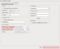
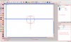
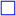
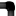

Bonjour, Vous avez World of Goo, vous aimez bien ce jeu et vous voulez prolonger sa durée de vie ? Hé bien, il est possible de créer ses propres niveaux ^^ .
Pour cela, nous allons utiliser World of Goo Level Editor (WooGLE), un programme multi-plateforme permettant de créer facilement ses niveaux :) .
Heu... C'est légal :euh: ?
Oui : 2D Boy (les développeurs de World of Goo) est parfaitement ouvert aux addins (extensions), leurs jeux sont sans verrous numériques et ils ont même consacré une partie de leur forum officiel aux mods :) .
Avant d'installer WooGLE, nous allons installer GooTool. GooTool est un logiciel qui permet d'installer facilement des addins (des niveaux ou des mods) pour World of Goo, sans prendre le risque de corrompre le jeu.
Car GooTool ne modifie absolument pas les fichiers du jeu : il copie les fichiers de votre jeu dans un dossier séparé, et le jeu modifié doit être lancé depuis GooTool (mais le jeu non modifié est toujours lancé de la même façon). Il propose également de gérer aisément les addins, d'obtenir quelques informations sur votre jeu et de configurer quelques options.
GooTool est en Java, et est compatible avec Linux, Mac OS X et Windows (avec en plus, pour les utilisateurs d'Ubuntu, de Debian ou de distributions Linux dérivées, un paquet Deb). Vous devez donc avoir installé Java, pour Ubuntu, le paquet est openjdk-6-jre.
WooGLE fonctionne sous Windows, Mac OS X et Linux.
Sous Windows et Mac OS X, un exécutable est mis à votre disposition. Sous Linux, vous pouvez utiliser le paquet Deb si vous êtes sous Ubuntu, Debian ou une distribution dérivée, ou exécuter WooGLE depuis ses sources avec Python si vous utilisez une autre distribution.
Si l'installation s'est bien déroulée, lancez GooTool, puis allez dans l'onglet Options.
Dans la section File locations, World of Goo installation doit correspondre au dossier où est installé World of Goo (la plupart du temps, GooTool le devine), et pour Custom World of Goo, créez un dossier quelque part (par exemple, dans Mes documents sous Windows ou votre dossier personnel sous Linux), au nom que vous voulez (par exemple, WoG), puis indiquez à GooTool ce dossier. Cliquez sur Save and launch World of Goo! : normalement, World of Goo doit se lancer.
Si c'est le cas, tout va bien jusqu'à là, fermez-le. Si World of Goo ne se lance pas et que vous êtes sous Linux, vérifiez que la bibliothèque SDL Mixer est installée.
WooGLE
À son premier lancement, WooGLE va commencer par vous demander un dossier. Positionnez-vous dans le dossier que vous avez mis dans le champ Custom World of Goo dans GooTool, et sélectionnez l'exécutable de World of Goo (sous Linux, WorldOfGoo.bin32 ou WorldOfGoo.bin64 en 64 bits).
L'interface de WooGLEPour créer un nouveau niveau, cliquez sur
New level, et entrez le nom de votre niveau, tout collé (ce sera le nom de son dossier). Par exemple, tapez MonPremierNiveau.
Par la suite, si vous quittez WooGLE, vous pourrez retrouver votre niveau en allant dans
Edit existing level.
Nous avons donc notre niveau, où nous pouvons voir plusieurs lignes.
Les lignes pointillées délimitent les limites visibles du niveau.
Les lignes bleues sont les limites techniques du niveau. Nous verrons plus tard comment leur assigner des actions.
La ligne orange-marron est le champ de gravitation du niveau. Si vous l'enlevez, le niveau se retrouvera en impesanteur ! Vous pouvez également la déplacer ou en ajouter d'autres, à l'aide de l'icône
Add Linear force Field (ou, si vous voulez un champ gravitationnel circulaire, pour une planète par exemple,
Add Radial force Field).
Le cercle correspondra à l'entrée du tuyau de sortie.
Les modes d'édition
Vous avez trois modes d'édition des éléments dans WooGLE.
Le mode de sélection
vous permet de redimensionner, sélectionner et déplacer les objets.
Le mode de zoom
permet de zoomer (vous pouvez aussi zoomer sans l'utiliser si votre souris a une molette).
Le mode de liaison
permet de lier les Goos entre eux.
Cliquez le cercle de l'entrée du tuyau, par exemple, afin de le sélectionner. Vous pouvez alors le déplacer, le redimensionner à l'aide des poignées (vous pouvez aussi faire pivoter certains éléments), et éditer ses paramètres à droite. Vous pouvez également le copier, le coller et le couper.
Maintenant, on va remplir un peu notre niveau. D'abord, mettons quelque chose, pour que les Goos puissent s'y déplacer. Par exemple, la falaise du niveau Bave.
Cliquez sur
Import images. Vous pouvez importer des images dans le niveau, depuis votre ordinateur ou depuis les ressources du jeu. Les images du jeu peuvent être trouvées dans res/levels si elles sont spécifiques à un niveau (c'est le répertoire où vous êtes par défaut) ou res/images, res se trouvant dans le dossier que vous avez créé et que vous avez spécifié à GooTool et WooGLE (c'est en fait là que se trouve la copie du jeu, destinée à être modifiée).
Dans le cas présent, notre falaise peut être trouvée dans res/levels/Drool (Drool étant le nom anglais du niveau Bave). Sélectionnez le fichier main_02.png. Il apparaît alors dans l'onglet Resource (dans le panneau de droite) sous le nom de IMAGE_DROOL_MAIN_02.
Cliquez sur
Add Image (SceneLayer), qui nous servira à mettre notre image. Un élément est ainsi créé. Comme vous le voyez dans l'arborescence, l'icône de l'image est représentée par une petite croix rouge, ainsi que ses éléments parents.
C'est normal : nous n'avons pas spécifié d'image. Dans le champ image des propriétés, tapez un espace afin de faire apparaître toutes les possibilités, et sélectionnez notre image (c'est simple, c'est la seule). Nous obtenons alors une jolie falaise. Déplacez-la en bas à gauche du champ de vision du niveau (le cadre de pointillés).
Créer des surfaces solides
Mais ne mettez pas encore de Goos : une image n'est pas solide. Nous devons ajouter des formes géométriques (
,

) pour ça. Ajoutez donc deux carrés et un cercle et déplacez-les, redimensionnez-les et faites-les pivoter afin qu'ils couvrent le haut, la façade droite et le bout arrondi de la falaise.
Mais il y a encore un détail : les Goos ont parfois des tendances suicidaires. Ajoutez donc un rectangle à l'extrémité droite de la falaise, mais ajoutez-lui le tag stopsign (pour cela, double-cliquez sur la valeur de la propriété tag et cochez stopsign dans la fenêtre qui s'affiche) : ce tag permet d'arrêter les Goos qui marchent là, sans empêcher les liaisons.
Ajouter des Goos
Commencez par ajouter trois Goos (classiques : utilisez le premier type de Goo en haut de la boîte à outils) en les disposant en forme de triangle à l'extrémité droite de la falaise (à gauche du rectangle anti-suicide), puis liez-les. Mettez-en une douzaine à leur gauche (sans les lier).
Parce que sinon, nos Goos auraient un peu du mal à finir le niveau :p . Positionnez le cercle de l'entrée du tuyau au dessus de la falaise, puis cliquez sur
Auto Pipe, ce qui va créer un tuyau. Positionnez-le en dehors du champ de vision du niveau, en ajoutant des angles intermédiaires (avec

Add Pipe Vertex) si vous voulez.
Un fond
Importez un fond. Par exemple, celui du niveau Le bourbier de Fisty, qui se trouve dans res/levels/FistyReachesOut sous le nom de bg.png, mettez-le et redimensionnez-le pour qu'il couvre toute la zone visible par le joueur (délimitée par les lignes pointillées) du niveau.
Mais, il cache notre falaise ! Nous allons le mettre en dessous de tout le reste. Mettez son paramètre depth (profondeur) à -100.
Goo-d bye !
Imaginons que notre jolie structure de Goos tombe de la falaise. Si vous testez le niveau maintenant et que ça arrive, vous serez surpris : les Goos, une fois entrés en collision avec la ligne bleue du bas, ne mourront pas, et feront comme si c'était une surface solide.
Pour qu'ils meurent, mettez le tag deadly à la ligne bleue.
Set Music. Comme avec les images, vous pouvez prendre n'importe quelle musique sur votre ordinateur, ou une musique du jeu. Nous allons prendre une musique du jeu. Allez dans res/music et prenez RainRainWindyWindy.ogg, par exemple.
Pour ajouter votre musique au niveau, faites un bouton droit sur l'objet Level dans l'onglet Level et faites Add music en mettant le nom de votre musique en paramètre sound (vous pouvez obtenir la liste des valeurs possibles en insérant un espace).
Ça y est, vous pouvez tester votre niveau, en cliquant sur
Les particules sont des animations qui couvrent tout l'écran (comme de la pluie, des feuilles mortes, de la neige) ou des animations qui ne couvrent pas tout l'écran (comme de la fumée). Vous en avez un large panel à votre disposition.
Pour en ajouter, cliquez sur
Add particles et précisez le paramètre effect (il faut insérer un espace pour que la liste apparaisse). Pour les animations qui couvrent tout l'écran, l'endroit de l'objet sur l'écran n'a aucune importance.
Le feu
Du feu. En ce qui concerne son apparence, vous devez utiliser une particule. Pour ajouter du feu, cliquez sur
Add Fire et précisez le champ particles (les particules qui représentent du feu commencent par fire).
La rotation
Pour la rotation, vous devez utiliser une forme géométrique avec une image ainsi qu'une charnière. Créez une forme géométrique (cercle ou rectangle), précisez-lui une image (paramètre image), une vitesse de rotation en paramètre rotspeed (entre 0 et 1, 1 étant le plus rapide et 0.5 étant déjà très rapide) et une masse en paramètre mass (mettez 500, par exemple, pour un cercle de rayon 75).
Pour ajouter une charnière, cliquez sur
Add Hinge mettez votre charnière à l'endroit autour duquel vous voulez que votre forme géométrique tourne et mettez l'id de votre forme géométrique en paramètre body1.
Le texte
Cliquez sur
Add Text Resource, dans la barre d'outils. Écrivez votre texte text (c'est le champ pour le texte anglophone, mettez dans fr si vous voulez mettre une traduction française, mais le champ text est obligatoire).
Cliquez sur
Add Label pour créer un emplacement pour le texte et indiquez-lui l'id du texte dans le paramètre text, ainsi qu'un identifiant quelconque dans id et une police (une police prédéfinie du jeu) dans font.
Les pancartes
Cliquez sur
Add Text Resource, dans la barre d'outils. Écrivez le texte de la pancarte (en allant à la ligne où vous voulez changer de face de la pancarte) dans le paramètre text.
Cliquez sur
Add Sign pour créer une pancarte, mettez-lui un nom quelconque dans name et indiquez-lui l'id du texte dans le paramètre text (toujours en mettant un espace pour avoir la liste des valeurs possibles).
Importez l'image sigpost_brown.png (classique), sigpost_gray.png (niveau sombre) ou sigpost_ish.png (niveau virtuel) dans res/images/levelimages et mettez-la en paramètre image de la pancarte.
Partager son niveau
Pour partager notre niveau, on va l'exporter dans le format .goomod . Pour ça, allez voir dans l'onglet addin du panneau de droite.
Renseignez les paramètres suivants :
id : Quelque chose sous la forme com.goofans.votrenom.monpremierniveau .
name : Le nom de votre niveau, avec des espaces.
version : La version de votre niveau.
description : Une description courte de votre niveau.
authors : Votre nom (ou vos noms si vous avez fait le niveau à plusieurs).
levels
level
name : Le nom de votre niveau, avec des espaces.
subtitle : Le petit texte qui apparaît en dessous du nom de votre niveau à son démarrage.
ocd : Un OCD. Facultatif. Vous pouvez mettre par exemple balls,5 pour que l'OCD soit à 5 balles.
Une fois tout renseigné, il ne doit plus y avoir de croix rouge. Dans ce cas, vous pouvez exporter votre niveau en cliquant sur
Make .goomod. Enregistrez-le où vous voulez.
Ensuite, vous pouvez partager votre .goomod sur Goofans, la plus grande communauté de joueurs de World of Goo.
Dans GooTool, il suffira d'aller dans l'onglet Mods and Levels, de cliquer sur Install new addin... et de sélectionner votre .goomod . Les niveaux installés avec Goomod apparaissent en haut à gauche du chapitre 1.
La documentation complète de WooGLE est disponible ici (en anglais).

{kind=link}
{kind=link}
{kind=link}